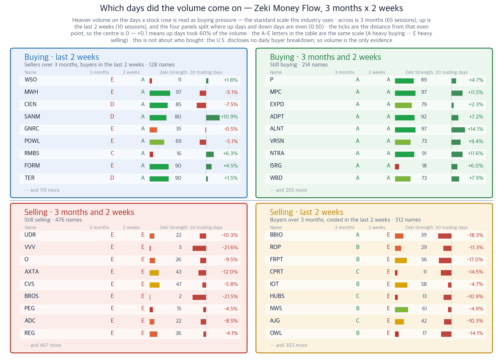
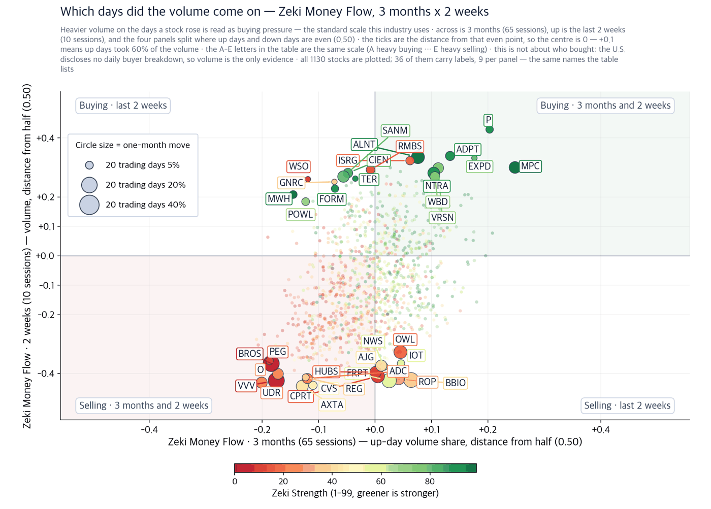

Meta jumps 11%, Nasdaq closes at a record, oil falls a fourth day
September 22, 2026 · figures are as of the September 21 close
Companies we do not own, found in the newspapers — with the figures behind why they might earn their place.
Dow 52,049 | Nasdaq Composite 27,122 | S&P 500 7,765 | Russell 2000 2,875 | UST 10-year 4.96% | Zeki Signal Yellow |
The Zeki Signal reduces seven measures of market condition to one light. Green means buying has the edge, yellow means wait, red means hold off. The Nasdaq Composite passes all seven and is green. The S&P 500 passes six and the Russell 2000 five, so both are yellow. Taken together the light for today is yellow.

How to read this
| Lit lamp | Today's regime. Green means buyers have the edge, yellow means wait, red means no new buys. |
| Filled squares | How many of the 7 conditions passed. More filled means firmer market structure. |
| All filled but not green | Something else pulled the grade down one step. The reason is printed under the lamp. |
Wait — the stance the signal light calls for.
The Nasdaq Composite rose 2.26% to 27,122 in New York overnight, a record close. Meta Platforms alone gained 11.34% and pulled the index up. The S&P 500 added 1.49% and the Dow 0.71%. West Texas Intermediate crude fell 4.51% to $95.8 a barrel, a fourth straight decline. The 10-year Treasury yield eased to 4.96%. (WSJ · IBD)
Act first
Three things to settle before the open — this is what to do now.
What to do today
1. Only the Nasdaq is green. Small caps are not.
The Nasdaq Composite clears all seven of our measures. The Russell 2000 clears five. That means the advance is concentrated in the large technology names. Starting a new small-cap position can wait.
2. Meta rose 11.34% the day before its own event.
The Meta Connect developer conference opens on Wednesday, September 23. When a stock runs ahead of an event, the give-back is larger if the announcements fall short. This is not a place to chase.
3. Oil has fallen four days running, weakening the case that rested on it.
WTI is at $95.8 and Brent at $100.3. Both grades fell together, so this is not a roll-date illusion. The advantage moves to companies that buy fuel rather than sell it.
So what do we do: If you add today, add in the large technology names and add smaller than usual. The index set a record while the Russell 2000 cleared only five of the seven.
First, this week
| Date | What to watch | What it changes |
|---|---|---|
| Wed, Sep 23 | Flash S&P Global US manufacturing and services indexes for September | Whether services held their recent pace moves rate expectations |
| Wed, Sep 23 | Meta Connect opens | User numbers for the AI glasses and the Muse app would change the case |
| Thu, Sep 24 | Weekly jobless claims and August new home sales | Shows whether housing demand broke after yields sat near 5% |
| Fri, Sep 25 | August durable goods orders and the final September consumer sentiment | Capital spending shows up here first |
Why the papers point here
Names found in the papers
Theme 1 - Meta up 11% in a day, big tech re-rated
Meta Platforms rose 11.34% in a single session, the day before its Connect developer conference opens on Wednesday. Muse, the AI assistant app the company released earlier this month, has stayed near the top of Apple's free download charts. New AI glasses, including versions without a camera, are expected to be shown. One stock moving was enough to put the Nasdaq Composite at a record. (WSJ page one and Business, IBD)
In short - It clears three of our four measures. It is up 34.80% over 20 sessions and Zeki Money reads A. Zeki Strength is 69, short of 90 - over a full year it still sits in the middle of the market. Confirming signal - Holding above the September 21 close of $741.25 while daily volume clears the 50-day average of 18.13 million shares. Where we would be wrong - The Muse app slipping down the download charts after Connect. Adoption, not the share price, is what this case rests on. |
Theme 2 - chips lead as yields fall, Intel up 12%
Intel rose 12.14% and AMD 9.95%. Micron added 2.77% and closed above the $1,042.40 level IBD marks. The 10-year Treasury yield fell to 4.96% the same day. When yields fall, companies valued on distant profits move first. Intel and AMD are names we do not own. (IBD, September 21)
In short - It clears three of four. Zeki Strength is 94, inside the top tenth of the market. What it misses is Zeki Money, which reads D - the price has moved a long way without the volume arriving on the up days. Confirming signal - Holding above the September 21 close of $121.78 while Zeki Money improves from D. Where we would be wrong - The 10-year Treasury yield going back above 5%. Yields are where this move started. |
In short - It clears three of four, with Zeki Strength at 94. Zeki Money at D is what it misses. Over three months it is still 22.30% lower and is recovering. Confirming signal - Closing above IBD's $1,807.38 with volume above the 50-day average of 14.12 million shares. Where we would be wrong - Finishing a week below the September 21 close of $1,766.64. |
Theme 3 - AI server sellers, a fresh breakout on Monday
IBD named four stocks that cleared their entry levels on Monday and put Hewlett Packard Enterprise first among them, past $63.44. It is a name we do not own. It sits not with the buyers of chips but with the company that assembles and sells them on. (IBD, September 21)
In short - It is the only name today that clears all four of our measures. Zeki Strength 93, Zeki Money A. The September 21 close sits just 0.5% below its one-year high. Confirming signal - Holding above the September 21 close of $61.75 with daily volume above the 50-day average of 20.65 million shares. Where we would be wrong - Falling back below the $63.44 level IBD marks and failing to hold it. |
Theme 4 - an $81 billion merger cleared, buyer and target split
Paramount settled the state attorneys general antitrust suit, clearing the way for its $81 billion purchase of Warner Bros. Discovery. The settlement stops short of ordering chief executive David Ellison to make structural changes; it sets penalties if promises are not kept. On the same news the buyer and the target moved in opposite directions. We own neither. (WSJ page one)
In short - It clears three of four and Zeki Money reads A. Zeki Strength at 73 falls short of 90. This price depends on whether the deal closes, not on what the company earns. Confirming signal - Holding above the September 21 close of $30.80, which is its one-year high. Where we would be wrong - New conditions in the federal review, or trouble carrying out the settlement. |
In short - It clears one of four, with Zeki Strength at 16. The same article is a reason on one side and a burden on the other. We are not putting this name forward today. Confirming signal - Finishing a week above the September 21 close of $9.91. Where we would be wrong - It already fails: down 4.25% over 20 sessions. |
A theme we are leaving out today - autonomous heavy machinery
Caterpillar introduced landfill machinery that needs no operator in the cab. Nvidia agreed to supply computing and AI tools for the autonomous trucks of Sweden's Einride, which expects up to 2,000 vehicles by 2028. The articles were large; the prices did not follow. Caterpillar is down 1.38% over 20 sessions with Zeki Strength at 70. Waste Management and Republic Services, which run the landfills, read 26 and 37 with Zeki Money at E. So we are leaving this theme out today. We do not invent names. (WSJ Business)
One more left out for the same reason
Novo Nordisk's chief executive laid out plans for new drugs and the shares fell 7.96%. Over 20 sessions the stock is down 14.85% with Zeki Strength at 14. The plan arrived and the price went the other way. (WSJ Business)
Today on one page
If you would buy today - 1 well grounded: Hewlett Packard Enterprise(HPE)
| Name | ①up over 20 sessions | ②Strength 90+ | ③flow 3mo A or B | ④2wk not weaker | Met | Weight of evidence |
|---|---|---|---|---|---|---|
| Meta Platforms(META) | O | X | O | O | 3/4 | Needs checking |
| Intel(INTC) | O | O | X | O | 3/4 | Grounded |
| Sandisk(SNDK) | O | O | X | O | 3/4 | Grounded |
| Hewlett Packard Enterprise(HPE) | O | O | O | O | 4/4 | Well grounded |
| Warner Bros. Discovery(WBD) | O | X | O | O | 3/4 | Needs checking |
| Paramount Skydance(PSKY) | X | X | O | X | 1/4 | Needs checking |
The four columns are (1) up over 20 sessions, (2) Zeki Strength 90 or better, (3) Zeki Money A or B over three months, (4) no weakening in the last two weeks. The count of O sets the grade. One of the six clears all four.
So what do we do: Only Hewlett Packard Enterprise clears all four today. Meta, Intel, Sandisk and Warner Bros. Discovery are each missing one; Paramount Skydance is missing three.
Where the money went
Scanned 1,130 stocks that trade at least $20M a day.
What this is, and what it is not. The United States has no daily disclosure of who bought — no institutional or foreign net share counts. What we can measure is buying pressure against selling pressure over the last thirteen weeks — how much of the trading arrived while the stock was rising. A reading above 0.50 means more shares changed hands while the stock rose. That is the standard way to infer institutional accumulation, but it is an inference, not a count.
What this is, and what it is not. The United States has no daily disclosure of who bought — no institutional or foreign net share counts. What we can measure is buying pressure against selling pressure over the last thirteen weeks — how much of the trading arrived while the stock was rising. A reading above 0.50 means more shares changed hands while the stock rose. That is the standard way to infer institutional accumulation, but it is an inference, not a count.
Heaviest accumulation
| Stock | Up/down volume | 20 trading days | As of |
|---|---|---|---|
| MPC | 0.75 | +11.5% | 09-21 |
| TEAM | 0.71 | +13.9% | 09-21 |
| P | 0.70 | +4.7% | 09-21 |
| RNG | 0.70 | +15.4% | 09-21 |
| VEEV | 0.68 | +5.4% | 09-21 |
Heaviest distribution
| Stock | Up/down volume | 20 trading days | As of |
|---|---|---|---|
| KIM | 0.29 | -6.2% | 09-21 |
| BHF | 0.29 | -4.6% | 09-21 |
| UDR | 0.30 | -10.3% | 09-21 |
| ROL | 0.30 | -12.4% | 09-21 |
| DY | 0.31 | -25.8% | 09-21 |
Selling confirmed by price — DY reads 0.31 and is down 25.8% over the month. When the volume reading and the price agree, the reading is doing what it is supposed to do.

How to read this
| What this does not say | Volume and price over the same period, side by side. It does not forecast — measured over 21 years of US data, the four panels were indistinguishable in what followed, and the gap between the top and bottom grades was 0.03pp, effectively nothing. So this is a picture of where a stock stands now, not a place to trade from. It also cannot say who bought: the US publishes no daily breakdown by investor type, so volume is the only evidence. |
| Four panels | The two measures are each compared with a centre line. Top right cleared both, bottom left cleared neither, and the other two cleared one. Each panel's title is a plain sentence saying what that means. |
| The two middle columns | Where the two periods are compared. If they carry letters A-E, that is the standard scale this industry uses: A heavy buying, B buying, C an even split, D selling, E heavy selling (a rank of all names in fifths, so A is the top 20%). If they carry numbers, that is net buying over the period. |
| Nine per panel | The largest movers in that panel. The rest are counted at the foot of the panel. These same nine per panel are the names labelled on the scatter. |
| Month bar | Zero at the centre: right is up, left is down. Compare lengths within one panel only — each panel is scaled to itself. |
| Zeki Strength | A 1-99 rank. Longer and greener means the stock's price is stronger than the market. |

How to read this
| One dot | One stock. Its position is simply its two values, and the horizontal and vertical rules through the middle are the centre line for each. The four corner labels say what each quadrant means. |
| Dot size | The last month's move, up or down. Bigger means it moved more. |
| Dot colour | Zeki Strength — greener is stronger. |
| Only 30 | Korean and ticker labels overlap beyond that. The names left out sit near the centre, where little moved. |
Did the money follow the names we found
| Name | Zeki Money, 3 months | Volume to clear (50-day average) | Cleared on Sep 21? | Last 2 weeks |
|---|---|---|---|---|
| Meta Platforms(META) | A | 18,131,088 | Yes 2.7× | +20.18% |
| Intel(INTC) | D | 109,768,652 | Yes 1.7× | +27.12% |
| Sandisk(SNDK) | D | 14,123,846 | No 0.7× | +1.53% |
| Hewlett Packard Enterprise(HPE) | A | 20,651,060 | No 1.0× | +18.75% |
| Warner Bros. Discovery(WBD) | A | 26,157,552 | Yes 8.9× | +9.03% |
| Paramount Skydance(PSKY) | B | 14,162,696 | Yes 4.7× | -8.75% |
An A or B for Zeki Money means the volume arrived on the up days. Only Intel and Sandisk read D - the price moved without the volume. The fourth column answers whether the September 21 session cleared the 50-day average. A day that clears it is the confirming signal.
Intraday checklist
The 10-year Treasury at 4.96%. Back above 5% and the expensive names fall first.
WTI at $95.8. Lower still and the advantage moves to the companies that buy fuel.
Meta's September 21 close of $741.25. Finishing below it means the pre-event gain is coming back out.
How to read today
Zeki Strength ranks a stock from 1 to 99 against the 1,100-odd US-listed names we follow. Above 90 means the top tenth. Zeki Money grades from A to E how much of the trading arrived on up days. When we measured it on another market it did not predict the following month, so we use it only as a last check. First the story, then whether the price followed, then whether the trading followed.
The week ahead: the flash S&P Global indexes on Wednesday morning and Meta Connect the same day. Jobless claims and August new home sales follow on Thursday, and August durable goods orders on Friday.
Today's digest draws on the Wall Street Journal print edition of September 22 and IBD of September 21. For the Journal we worked from the print index and each article's headline and summary. Figures are our own and are as of the September 21 close. IBD's recommended exposure level could not be confirmed for this issue and is not carried.
This report is for information only and is not individual investment advice. ZekiRex™ Apex US runs a rules-based simulated portfolio of $10,000,000 — there is no real account, no order and no fill. The performance shown excludes commissions, taxes and slippage, and the price data omits companies that were delisted, which biases the result upward (survivorship bias). Past performance does not guarantee future results, and investing carries risk of loss of capital.
This digest carries names filtered by figures we calculate ourselves. It is not individual investment advice and does not recommend buying or selling any security. Every grade and rank shown is our own calculation, on a simulated portfolio basis. Investing carries risk of loss of capital.
This is the Rex Way, ZekiRex™